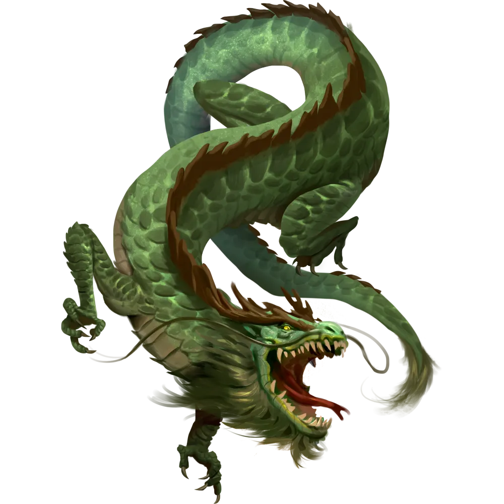

各年龄段数据卡
森林龙是大自然的看护者。尽管他们行事残酷、脾气暴戾，却履行着至关重要的职责：他们照看森林的繁茂生长，保护自然界免遭掠夺；而当文明越界太远时，他们便将其彻底碾碎，最终让残垣断壁重新归于林海。森林龙履行这一职责绝非出于任何使命感或利他精神，单纯只是随心而为――他们将整片森林视为己物，把一切企图掠夺森林的家伙统统视为入侵者、窃贼与偷猎者。他们无法容忍文明对世间荒野的步步蚕食，更对技术进步深恶痛绝。 森林龙巢穴森林龙倾向于在密林深处筑巢，选址往往能遮风避雨且易守难攻。他们至少也会找一片茂密的树丛，不过较年轻的森林龙更偏爱林间洞窟；年长的森林龙则喜欢在自己亲手摧毁、并任由森林重新吞没的聚落废墟中沉睡――这些重归自然的遗迹不仅是理想的庇护所，更是一座座彰显森林龙战胜可憎凡人文明的纪念碑。 尽管动机完全出于自私，他们的所作所为在部分人眼中多少仍有几分值得称道之处。即便如此，人类等凡人依旧普遍畏惧并憎恶森林龙，视其为屠戮伐木工与毁灭文明的凶神。尽管德鲁伊与其他亲近自然者或许会声称，森林龙在生命循环中发挥着重要职能、守护了林中栖息的万千物种，但对于那些痛失挚爱或家园的人来说，这种说辞不过是冰冷刺骨的安慰罢了。 奇特的是，尽管森林龙脾气普遍恶劣，他们却与昆虫及其他小型动物相处甚欢；这些小生灵常常栖息在森林龙的身躯之上，以共生方式从各方面协助巨龙。其中最具代表性的便是森林龙独特的吐息武器――它能将一群共生的昆虫化作令人生畏的致命洪流。偶尔有人在林中发现疑似被虫群活活啃食殆尽的尸骸，其真凶往往正是森林龙的吐息武器。 森林龙一心想将璀璨苍翠的林海独占己有，这份自私不仅使他们与凡人势同水火，也让他们对同族的其他森林龙缺乏容忍，因为竞争者随时可能染指他们的领地。在他们看来，大多数其他皇权龙同样令人讨厌；不过对于安分守己待在地下囤积财宝、不来糟蹋林木的冥界龙，森林龙倒勉强能抱有几分敬意――前提是那些冥界龙肯停下没完没了的炼金实验、别再推动科学发展。凡人世界用不着更多能烧毁森林的炼金火就已经够烦人的了，维持现状便已绰绰有余！ 森林龙宝库部分森林龙热衷于在宝库中收集自然奇珍，并宣称唯有此类宝库才更高贵，绝不沉溺于腐朽的文明造物。不过这只是少数派的观点。大多数森林龙都十分乐意炫耀从文明世界夺来的战利品，只要获取方式符合森林龙认定的体面标准即可――那便是作为被巨龙亲手撕碎的文明据点与军队之残骸。至于那些离经叛道、竟屈尊与凡人通商，甚至更进一步专门委托工匠为自己打造藏品的森林龙，则会遭到同族的口诛笔伐与鄙夷唾弃。 太古森林龙在那些贪得无厌地四处扩张、急于开发并榨干周遭自然资源的文明眼中，太古森林龙就是活生生的天灾末日。一条震怒的太古森林龙仅凭一己之力便能覆灭整个国度，将其宏伟都市化为废墟，任由森林吞没残迹，直至林木间只剩下藤蔓缠绕的断壁残垣――向任何胆敢再次洗劫大地、惊扰巨龙安宁之徒发出无声的警告。 那些对太古森林龙盘踞的浩瀚林海心怀敬畏之人，即便无意间误入领地，有时也能侥幸捡回一条性命；而极少数有幸瞥见这位凶戾龙族守护者真容的生还者，无不传颂着他们可怖的威容与暴烈的脾性。 森林龙的共生关系相比绝大多数其他巨龙传承，森林龙与自身领地内的动植物建立了更为紧密的共生关系。固然也有其他种类的巨龙能与动物交谈、向其施以援手或号令群兽，更有本身便由植物或真菌构成的莱希龙；但森林龙却允许其他生物直接栖息在自己躯体表面，甚至将昆虫融入自身的巨龙吐息之中。以下是森林龙驱使领地内各类动物的其他常见方式： 鸟类：森林龙常以鸟类充当信使，偶尔也会任用猫头鹰等飞行无声的鸟类担任密探。鸟类能够迅捷高效地往返各地，其鸣唱声在紧要关头还能传递情报。 爬行动物：森林龙有时会挑选爬行动物――尤其是蛇类――担任自己的传令使，因为他们颇为钟爱自己眼中蛇类所具备的智慧与狡黠。为此，他们或许会施展魔法提升这些蛇类的智力，并赋予它们说龙语或凡人语言的能力。 啮齿动物：相比鸟类，森林龙往往更偏爱老鼠、田鼠、����、松鼠与花栗鼠等啮齿动物充当密探，因为飞鸟掠过较易引人注目，而啮齿小兽却能悄然融入环境背景之中。 狼群：有些森林龙格外钟情于狼等群居动物。只要巨龙能挑战并夺取狼群首领之位，便能将这些恶狼作为忠心耿耿的部下加以统御。 一般而言，随着年岁渐长，森林龙的毛发会愈发酷似苔藓；及至力量登峰造极、迈入太古龙之境时，他们的毛发便已与真正的青苔几乎别无二致。他们树皮般的坚厚鳞皮更远比钢铁强韧，同时仍保留着参天古木树干般的质感。尽管性情乖戾暴躁，太古森林龙却容许细小的昆虫以及啮齿兽、小鸟等动物栖息在自己蜿蜒如古木般的身躯沟壑与缝隙之间。这些小生灵在龙躯上构筑起一方微型生态系统，并能替森林龙打理种种他们懒得亲自动爪去够的杂务，颇具实用价值。 太古森林龙与躯体表面森林生灵的共生关系还不止于此。事实上，他们最强大也最令人难忘的特征――那威猛无俦的巨龙吐息――正源于他们与周身嗡鸣虫群的紧密联结：与几乎所有其他巨龙传承不同，森林龙的吐息并非由能量、元素或无生命物质构成，而是由那些活生生的昆虫本身汇聚而成；这群微小生灵在巨龙魔力的超限灌注下化作恐怖的虫群风暴，足以造成它们单靠自身绝无可能企及的滔天毁灭。 太古森林龙通常会宣称整片广袤而古老的森林归其所有，但这一局面的形成往往有几种不同途径。最直接的一种，便是森林龙栖身的林地纯粹凭借巨龙漫长的寿命与坐镇守护而日益繁盛。 换言之，倘若一条森林龙雏龙在一片规模尚小、树龄较浅的新生树林中筑起巢穴，并在此盘踞千年，那么他的存在与庇护必然会不断促进林木生长，同时杜绝枯萎病害、滥砍滥伐以及其他危及森林健康的威胁。如此一来，等到他成长为太古龙时，这片树林便极有可能已蜕变为神话传说中的苍莽古林。 另一种可能则是，随着森林龙日渐年长，一片无法继续扩张的狭小树林已容纳不下他日益澎湃的力量；于是他便会远赴他乡，另行寻觅一处更配得上自身崇高威望的新家园。无论属于哪种情况，只要某片幽深阴暗的森林流传着太古龙潜伏深处的传说，对其掉以轻心都将是致命的涉险之举。 沉眠林海卡伊纳作者：Conatchi 凡向荒林索取却不知回馈者，必遭灾殃！早在年轻之时，森林龙卡伊纳便以酷爱漫长沉眠而闻名，而随着年岁增长，他的睡眠也变得越来越久。或许正因他清醒活动的时间极为短暂，当众多其他森林龙在猛攻文明世界的过程中陨落时，这种生活方式反而让他安然活到了太古龙之龄。 某一天，太古龙卡伊纳在一座孤岛上陷入沉睡，但这一觉却与以往截然不同。一只名为“古华”的强大木系古元灵兽融入了沉睡巨龙的体内。灵兽与生灵相融本不算罕见，然而他们二者的融合方式却非同寻常，近似于元素化身的诞生成型。自他沉眠之处，一株灵树破土萌发，令这座原本仅有稀疏林木的荒岛上崛起了一片苍莽浩瀚的原始森林。 以环绕巨龙与融合古元灵兽生长而成的灵树为中枢，这道共生联结将卡伊纳的影响力与威能散播至整片原始林海的每一处角落。 凭借在这片有限疆域内近乎神明般的权柄与近似全知的感知力，卡伊纳领悟了自然、掠食者与猎物之间的循环之道，并维系着林海内的万物平衡。借由这种方式，他确保这片森林中的草木百兽皆能在自己警觉的注视下欣欣向荣。 由于林中生长着价值连城的传奇材料，许多冒险者纷纷觊觎这片森林的丰饶物产；但那些不愿奉上等价交换、胆敢扰乱生态平衡的闯入者很快便会发现，踏入这片林海容易，想要活着离开却难如登天。时不时便会有搜救远征队不得不深入苍翠密林深处，去寻找那些消失在林海之中的失踪者。 归林苍翠埃雷曼德里尔传说在远古时代，曾有一座城邦肆意夷平森林、过度盘剥周遭的土地。那座城市膨胀得臃肿而庞大，城中居民浸淫在奢靡与赤贫交织的畸形乱象之中，贫富差距悬殊到了极点。然而如今，那片土地附近只剩下一望无际的古老原始森林。难道那座传说中的繁华城邦不过是虚构的神话？若非如此，他们究竟遭遇了怎样的结局？ 多亏了甘冒生命危险探寻真相的考古学家与历史学家冒险者，现代凡人终于得知了巨龙们早已心知肚明的事实：在那片森林的心脏地带，的确沉睡着一座坍塌倾颓的古城废墟；不屈不挠的苍翠草木从瓦砾之下奋力钻出，死死缠满断壁残垣，追逐着从上方林冠缝隙洒落的点点阳光。然而，若在这座已被自然收回的城市中挖掘过深，便有惊醒其毁灭先驱的风险――那是一条名为“归林苍翠”埃雷曼德里尔的太古森林龙。 这一发现曾令历史学家们困惑不已：既然附近就栖息着一条足以覆灭他们的强大森林龙，当年那座强盛城邦又是如何一路发展到那般荒淫颓废之境地的？通过考证史料，并向那些记录着龙族领地变迁与著名古龙名讳的巨龙请教，学者们揭开了一个异乎寻常的真相：埃雷曼德里尔并非那座城邦所掠夺之森林的本土复仇者，也不是从某种冬眠中苏醒的古龙，而是一条来自远方的游荡森林龙――只因听闻了那座城邦的所作所为，“归林苍翠”顿时暴怒难遏，专程远道而来兴师问罪。 林间珍馐森林龙对繁复考究的烹饪嗤之以鼻，将其视为可憎凡人文明的产物；然而这种观念却常常激怒毒蕈龙以及其他热衷于运用精湛厨艺烹调各色佳肴的巨龙。不过，这并不意味着森林龙味觉粗鄙、随便什么都吃得下。他们喜爱新鲜的食材，根据菜式不同或生食、或以质朴纯粹的方式简单料理，但他们会不辞辛劳地猎取最鲜美的肉食，并采集风味独特的蘑菇、坚果与林间草木。当然，对许多森林龙而言，世上“最鲜美的肉食”莫过于从那些胆敢代表文明玷污森林的入侵者身上割下的血肉――毕竟其中还佐有一丝恰到好处的快意怨毒。 埃雷曼德里尔横跨整片大陆抵达那座传说之城，随即驱使周遭的一切自然万物与城邦为敌，一点一滴地蚕食削弱城邦的力量――况且城邦的军队在多年和平与奢靡的浸淫下早已松懈怠惰。最终，这条巨龙率领由百兽与草木组成的浩荡大军亲临城下，降下了致命的最后一击。当年的他甚至尚未步入远古龙之列，而如今，即便在太古龙之中他也已算得上高寿老辈。 或许“归林苍翠”最令人胆寒之处，就在于他至今依然活跃于世。当历史学家们在那座传奇城邦的废墟间发现他的巢穴时，他们立刻从跨越数个世纪的零星记载中认出了这个名字。 每当某个国度变得狂妄自大、将自然的馈赠视作理所当然之时，埃雷曼德里尔便有可能再度降临，将一切彻底抹平归零。 话虽如此，这位太古森林龙却极为老练精明，绝不会挑起连太古龙也打不赢的愚蠢战斗。倘若冒犯他的文明过于庞大强盛、难以正面强攻，他大可从容沉睡，静候对方因自满而露出脆弱破绽的那一天。 而倘若连等待也无法奏效，“归林苍翠”或许就会被迫放下自己惯用的雷霆手段，转而采取他平生最讨厌的消遣之一：暗中谋划。 森林地盘之争事实证明，喜爱在森林中筑巢的巨龙着实不在少数。除了森林龙之外，还有像我本人这样的绿龙，以及乔木龙，不一而足。通常情况下，当另一血统的巨龙与森林龙栖息在同一片森林里时――除非那片林海当真辽阔无边――终究有一天，其中一方或双方会认定“一林不容二龙”，进而掀起一场地盘争夺战；这既可能是一场残酷决绝的领地单挑，也可能演变为旷日持久的拉锯战。在这三者之中，乔木龙与绿龙有时还能设法和平共处，唯独森林龙在面对“属于自己”的森林时占有欲与领地意识实在太强，绝难容忍他人染指。 |
 森林龙 |